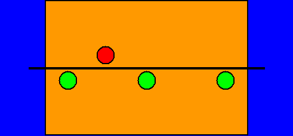
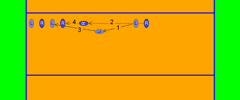

Aktiv - Passiv
Je nach Höhe der Blockspielerin hat sie mehrere Möglichkeiten:
Aktiver Block
Die Spielerin muss über das Netz und wenn möglich auch noch über den Ball hinübergreifen. Sie klappt mit den Handgelenken nach unten und spielt den Ball aggressiv ins gegnerische Feld.
Ein Fingerstellung wie in dieser Skizze ist allerdings auch gefährlich: Wer nicht genug Höhe hat, oder zu früh klappt, wird mit schmerzhaften verbogenen oder auch gebrochenen Fingern dafür büßen!
Passiver Block
Die Handgelenke sind gerade oder sogar leicht nach hinten geklappt und werden nicht oder nur leicht gespannt. Dem Ball soll in erster Linie die Wucht genommen werden, er soll im hohen Bogen als geschenkter Ball ins eigenen Feld fliegen um möglichst einfach weitergespielt zu werden.
Einzelblock - Doppelblock
Je nach der Anzahl der Spielerinnen, die gemeinsam zum Block springen, kann man unterteilen in:
Einzelblock
Eine Spielerin springt alleine. Das kommt meistens gegen Schnell- oder Kombinationsangriffe vor.
Doppelblock
Der Standardblock gegen Hauptangreiferinnen.
Basis (Vorbereitung)

Gegenüber der jeweiligen Angreiferin
Die Blockspielerinnen warten gegenüber ihren jeweiligen Angreiferinnen.
Die Außenblockerinnen warten außen nahe der Linie, sie bewegen sich von außen zu ihrem Blockort, die Mittelblockerin schließt auf, gemeinsam wird zum Block gesprungen.
Aufspielerin vorne
Die Blockspielerinnen warten gegenüber ihren jeweiligen Angreiferinnen.
Wenn die gegnerische Aufspielerin Vorderspielerin ist, ist sie die Angreiferin für die Außenblockspielerin. Die Blockspielerin schützt vor allem die Feldmitte, außen verteidigt die Spielerin auf der Position 5.
Bewegung zum Block
Öffnen, langer Schritt, Schließen
Mit dem inneren Fuss die Bewegung beginnen(1 - 'Öffnen'), dann den langen Schritt um zum Absprungort zu kommen(2), dann die Bewegung stoppen und den Körper in die richtige Absprungposition bringen(3).

Öffnen, langer Schritt, Zwischenschritt, Schließen
Wenn ich weiter weg beginnen muss, oder mich nicht optimal vorbereitet habe, kann ich mit einen zweiten längeren Schritt mir helfen(3) um zum Absprungort zu kommen. Das Stoppen der Bewegung(4) erfolgt dann aber teilweise mit dem falschen Fuss, damit wird es umso schwieriger und die Gefahr besteht, dass ich in meine Mitspielerin hineinspringe!
Blockposition
Wo wird gesprungen?
Den Block stellen. Beim Doppelblock ist immer eine der beiden Spielerinnen für die Festlegung der Position des Blocks zuständig. Die andere Spielerin schließt auf, gemeinsam springen sie zum Block.
Der Block legt die Verteidigungstaktik fest, die Feldverteidgung muss sich am Block orientieren (können)!
Wenn der Block fliegt, also seine Position wärend des Sprungs verändert, ist auch die Feldverteidigung viel schwieriger, da die Spielerinnen nicht auf einander abgestimmt agieren können.
Was muss ich tun?
- Augen auf!
Beobachte die Gegnerinnen - versuche sie zu lesen. So kannst du Gutes wiederholen und Fehlerhaftes zumindest bei der nächsten Aktion besser machen.
- Beobachte den Ball und deine Gegenspieler genau. Versuche sie zu lesen.
- Stehe in leichter Kniebeuge, die Unterarme sind vorne oben, die Hände gespannt.
- Springe möglichst senkrecht, schiebe die Arme gerade nach vorne oben über das Netz.
- Geblockt wird mit den Händen, nicht mit den Armen.
Wer am Unterarm angeschlagen wird, ist zu weit weg vom Netz oder hat zu wenig weit übergegriffen. Nur ganz selten ist der Gegner so gut oder hat so viel Glück, dass es kein Fehler der Blockspielerin ist.
- Vergrößere die Blockfläche durch Spreizen der Finger.
Aber achte auf die kleinen Finger, wenn du sie zu weit zur Seite wegspreizt, kann das sehr weh tun.
- Körperspannung halten, sonst fällst du nach vorne.
- Lass die Arme auch bei der Landung lange gestreckt, so kannst du auch bei falschem Timing eine gierige Angreiferin noch passiv blocken.
- Lande beidbeinig, und sei sofort wieder spielbereit (Vorbereiten zum Aufspiel oder Retten des Balls, Lösen zum Angriff ).
- Nicht die Höhe ist entscheidend, sondern das Timing!
Je weiter der Angriff vom Netz weg ist, um so später musst du springen.
Für jede Angreiferin gibt es einen optimalen Zeitpunkt - manche schlagen früher (Bsp.: Chinesinnen), manche schlagen verzögert (Bsp.: nach Kurbeln beim Ausholen und andere technische Fehler).
Wie geht das?
Die Grundstellung
Die Füße sind ungefähr schulterbreit auseinander, die Knie leicht gebeugt. Die Oberarme zeigen waagrecht nach vorne oder leicht nach oben, die Unterarme und Hände werden gerade nach oben gehalten. Die Handflächen zeigen zum Netz, sind aber leicht nach innen gedreht (als ob sie einen Ball umfassen würden), die Finger werden etwas vorgespannt. Der Blick ist zum Gegner gerichtet, dabei soll sowohl der Ball, als auch die einzelnen Spielerinnen, die an der Aktion beteiligt sind, beobachtet werden.
„Böse“ Trainer beschreiben die Haltung so, als ob man der Angreiferin wie eine Raubkatze an die Gurgel springen wolle.
Die Verschiebung zum Blockort
Sobald die Spielerin erkennt, wo sie zum Block springen muss, verschiebt sie sich so schnell wie möglich dorthin. Dafür gibt es verschiedene Möglichkeiten.
Der Absprung
Der Absprung erfolgt aus den Beinen, anfangs ohne(!) Unterstützung durch die Arme.
Dafür gibt es mehrere Gründe:
- Mit Armschwung dauert es länger - Schnellangriffe sind dann schon abgeschlossen, bevor die Hände oben wären.
- Mit Armschwung fallen auch fortgeschrittene Spielerinnen (meist) ins Hohlkreuz, die Arme werden hinter dem Kopf hochgeführt und schlagen dann nach dem Ball. Bis die Arme über dem Netz sind, dauert das ziemlich lang, eine routinierte Angreiferin legt in der Zwischenzeit den Ball zwischen Netz und Block in den freien Raum oder schlägt die Blockspielerin seitlich am Unterarm an.
Der Absprung erfolgt je nach Entfernung der Angreiferin vom Netz mit ihr oder kurz danach, damit man nicht wieder herunterfällt, bevor der Ball das Netz überquert.
Die Armführung
Die Arme werden gerade nach vorne oben und über das Netz geführt, nicht ausholen(!) und nach dem Ball schlagen. Die Hände bleiben dabei immer senkrecht oder leicht nach vorne geneigt, die Finger werden angespannt, damit sie der Ball nicht wegdrückt. Die Augen sollten auf der Angreiferin bleiben - der Ball wird so schnell, dass man ihn nicht mehr erkennen kann. Deshalb weiß man als Blockspielerin meistens auch nicht, ob der Ball links oder rechts am Block vorbei ist.
Der Ballkontakt
Der Ballkontakt erfolgt mit den Händen im höchsten Punkt des Sprungs oder kurz davor, da viele Spielerinnen in der Fallphase auch die Körperspannung auflösen. Deshalb ist auf eine gute Körperspannung zu achten, man kann sich mit einem späten Sprung helfen.
Weiche Landung
Die Landung sollte mit noch immer gestreckten Armen erfolgen, da viele Angreiferinnen so nach unten „gieren“, dass sie den Block auch noch 10cm unter dem Netz treffen. Viele Spielerinnen sind so groß, dass sie die Netzhöhe selbst im Stand oder zumindest auf den Zehen erreichen. Dabei ist darauf zu achten, dass die Spielerinnen trotz der ungewohnten Körperhaltung weich abfedern, damit sich langfristig keine körperlichen Schäden ergeben können.